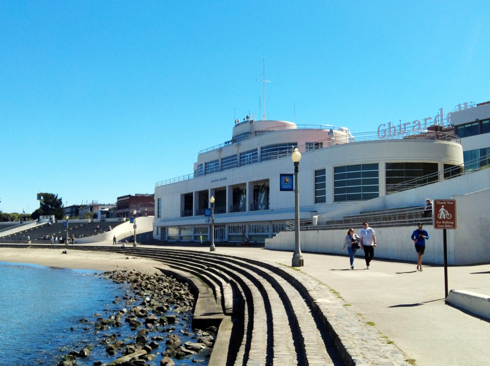

海に向かって、横に広がる。
丸みのある角と、横に続く窓を見ます。海のそばにある大きな船のような印象を、どこから感じるでしょう。
作品・制作の例3件を紹介しています。実作品画像1点、参照・関連画像0点。画像の収集は継続中です。
歴史的な様式・潮流（建築と製品の流線型を区別して扱う）
Streamline Moderne
丸い角。横へ長く続く線。船のような丸い窓。
1930年代のアメリカでは、建物や身近な道具にも、速さを感じさせる形が広がりました。
これを、ストリームライン・モダンと呼びます。
速そうに見えることと、本当に速く動くことは別。形の工夫を比べてみましょう。
実作品を見る

画像を表示できませんでした。下の出典ページで確認できます。
ウィリアム・ムーザー3世（設計）／2世（監督） / 1936–1939年建設
丸みのある角と、横に続く窓を見ます。海のそばにある大きな船のような印象を、どこから感じるでしょう。
Aquatic Park Bathhouse, 1936–1939. Photo: NPS / C. Fenton.
出典で作品・資料を見る ↗米国政府作成写真（Public Domain）。CC0ではありません。
1939年完成の建築。原建築・現代の写真・内部の壁画は別に扱います。
公式個別画像のNPS/C. Fentonクレジットと、NPS作成資料の利用方針を確認。
縦横の比率を保って縮小しJPEGで保存。切り抜き・色の変更・描き足しはしていません。
米国政府作品の表示に基づく利用です。全法域での自由利用を保証するものではありません。
画像の利用条件 ↗建築
米国国立公園局がこの建物をストリームライン・モダンと明記。工業製品の流線型とは違い、動かない建物が船を思わせる例として比較する。
作品・資料の出典を見る ↗作品名（出典表記）：Aquatic Park Bathhouse（アクアティック・パーク浴場、現在の海事博物館）
William Mooser III（ウィリアム・ムーザー3世）（設計）、William Mooser II（ウィリアム・ムーザー2世）（監督）—NPS現行本文の表記に従う / 1936–1939年建設、1939年1月22日落成式 / 建築
工業製品
メトロポリタン美術館の展覧会解説が、流線型を生活用品へ応用した例としてこのモデルを挙げる。個体情報はデトロイト美術館で別に確認した。
作品・資料の出典を見る ↗作品名（出典表記）：Electrolux Cannister Vacuum Cleaner, model no. 30
Lurelle van Arsdale Guild（ルレル・ヴァン・アーズデール・ギルド）（デザイン）、Electrolux Corporation（エレクトロラックス）（製造） / 1937年頃（デトロイト美術館所蔵個体の記録） / 工業製品
工業製品
メトロポリタン美術館の展覧会とクーパー・ヒューイット国立デザイン博物館の学芸員解説が流線型の具体例として扱う。形を滑らかにすることが、清掃のしやすさにつながる比較例。
作品・資料の出典を見る ↗作品名（出典表記）："Streamliner" Meat slicer
Egmont Hegel Arens（エグモント・ヘーゲル・アーレンス）、Theodore C. Brookhart（セオドア・C・ブルックハート）、David Anderson Meeker（デイヴィッド・アンダーソン・ミーカー）（Met個体のデザイナー表記）、Hobart Manufacturing Company（ホバート製造会社）（製造） / 1940年（メトロポリタン美術館所蔵個体の記録） / 工業製品
1930年代の米国では、飛行機や自動車、列車だけでなく、家の中で使う道具にも流線型が取り入れられました。
建物にも、船を思わせる丸窓や手すりが登場します。
未来への期待を形にする一方で、使いやすさにつながる工夫もありました。
クーパー・ヒューイット国立デザイン博物館が紹介する肉切り機《ストリームライナー》のモデル410では、機械の部品を滑らかな外側の覆いに収め、掃除をしやすくしています。
見た目と働きが、同じ形の中で出会うのです。
光沢のある金属や塗装の面に注目します。ただし、銀色でなければこの様式ではない、という決まりはありません。材料と表面の仕上げを、作品ごとに確かめましょう。
この様式に共通する、決まった書体は定めません。建物の看板や製品の名前を見るときは、文字の形だけでなく、横へ伸びる線との関係も比べてみましょう。これは観察のための問いで、当時の共通規則を示すものではありません。
丸い角、連続する曲面、船のような丸窓や手すりが手がかりです。アクアティック・パークの浴場では、曲がる外壁と丸窓が使われています。似た形が一つあるだけで、様式を決めないようにします。
横に続く線や、部品を一つの滑らかな外形にまとめる仕組みを見ます。『速そうに見せるため？ 掃除や使い方のため？』と、目的を分けて考えると面白くなります。
アール・デコとは、きっぱり分かれた別世界ではありません。
フリスト美術館はストリームライン・モダンをアール・デコの新しい展開として説明しています。
ここでは、アール・デコの幅広い装飾や材料の工夫のうち、流線型が建築や製品に広がった面を詳しく見ます。
『アール・デコは飾る、こちらは飾らない』という二択にはしません。
いまの製品でも、丸みや光沢によって速さや新しさを感じることがあります。ただし、それだけで1930年代から直接受け継がれたとは言えません。形が似ているという観察と、歴史的なつながりが資料で確認できることを分けて考えましょう。
作品・制作の例3件を紹介しています。実作品画像1点、参照・関連画像0点。画像の収集は継続中です。